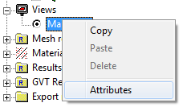
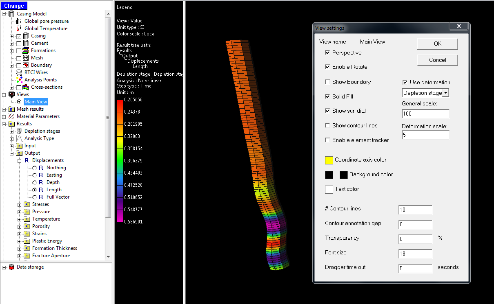
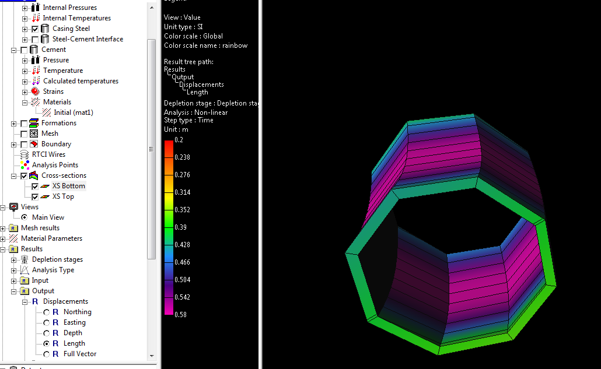
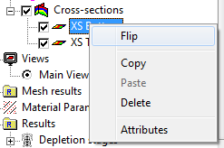

With only steel selected for visualization, a long very thin mesh appears in the drawing area. Manipulation of this mesh can be difficult, and can be made easier by magnifying it in the radial direction.

This magnification is accessible through the Attributes menu of the Main View node in the model tree's Views branch.

A selection of the mesh can be shown by creating two cross sections.

One of the cross sections must have its normal in the opposite direction of the other, otherwise its clip plane will be occluded by the other cross section's clip plane. The easiest way to accomplish this is to Flip it.

Just as with cross sections in the main model, they need to be activated in the main tool bar.